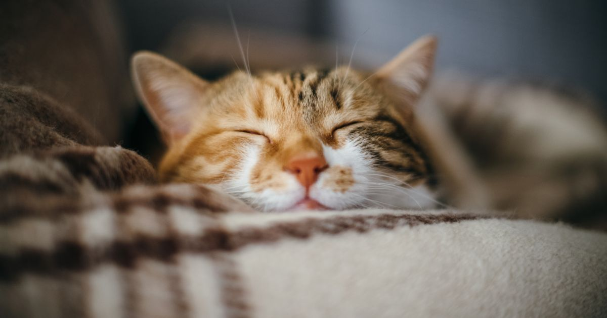
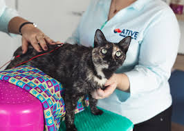
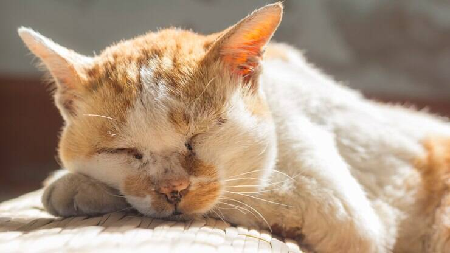

10 DICAS PARA GATOS GERIÁTRICOS

Envelhecer. Uma palavra que nos assusta mas sendo um processo natural temos de o aceitar e
levar da melhor forma. Tal como os humanos, os nossos companheiros também envelhecem.
Tanto nos cães como nos gatos diversos problemas podem e vão surgir, tais como, dificuldades
motoras, disfunção cognitiva e possivelmente o aparecimento de doenças associadas ao
desgaste do corpo ao longo dos anos. Nos gatos, como são animais mais suscetíveis a
esconder as suas fragilidades teremos de estar mais atentos.
Não se assuste! Vamos falar aqui de algumas dicas para ajudar o seu pequeno felino a viver esta
fase da melhor forma.
A idade a que um gato passa a ser sénior é variável, mas pudemos dizer que em média os 12
anos são a fase de passagem. Porém a partir dos 8/9 anos vamos estar atentos a sinais que
podem ser mais precoces em alguns gatos.
1. Problemas Locomotores

Gato no médico
Um dos primeiros sinais de velhice num animal são as dificuldades motoras. O seu gato pode
sofrer de artrites ou artroses. Contudo, pode não ser assim tão percetível num gato a presença
desta doença. Devemos ficar atentos aos seguintes sinais: não subir com tanta facilidade para
locais habituais, deixar de subir para locais habituais, começar a fazer as fezes fora da caixa de
areia ou deixar de comer/beber.
2. Senilidade Felina

Gato velho dormindo
Os gatos podem sofrer de senilidade/demência. Sinais que podem significar que estamos
perante uma situação dessas são: perda de capacidade de aprender, perda de memoria (deixam
de localizar a agua, comida e areia), esquecer momentaneamente de uma ordem ou palavra
que antes entendiam sem nenhuma dificuldade, podem deixar de subir para a cama porque se
esquecem de como se faz (mas também pode ser um problema locomotor), vocalizações
excessivas principalmente durante a noite, deixarem de estar confortáveis em situações que
anteriormente lhes era normal, desorientação espacial, perda de hábitos de higiene.
3. Recursos Básicos
 Recuros para ter em casa que tem gato
Recuros para ter em casa que tem gato
Sendo que o seu animal está menos ágil, vamos ajudá-lo a sentir-se mais confortável na sua
casa. Para um artrítico chegar aos recursos básicos pode ser uma tarefa difícil. Devemos
verificar se todos os recursos estão facilmente acessíveis. Caso não haja este cuidado, o seu
gato pode deixar de comer ou começar a fazer as suas necessidades fora da caixinha,
simplesmente porque lhe é uma tarefa difícil chegar ao recurso que precisa Colocar
comedouros e bebedouros ao nível do chão e em maior número permite que o seu gato não
tenho de andar tanto ou subir para níveis mais elevados, mesmo que numa fase inicial se
mantenham outros nos locais que sempre tiveram.. As caixas de areia devem também ser
aumentada de número e com rebordos baixos, para o seu gato entrar e sair com maior
facilidade. Este aumento do numero de caixas de areia, pontos de agua e comida é válido
também para gatos que demonstram sinais de senilidade, isto porque como se esquecem de
onde estão os recursos ou se desorientam podem deixar de comer ou beber, e começar a
eliminar fora da caixa de areia simplesmente porque não sabem onde estão os recursos.
Todos os recursos devem ser colocados principalmente no local onde o seu gato passa mais
tempo, e afastados o mais possível.
Se seu felino gosta de estar de vigia em locais altos, pode sempre dar uma ajudinha colocando
rampas antiderrapantes ou outros objectos que funcionem como degraus, para que possa
continuar a usufruir dos velhos hábitos.
4. Exercício Físico
 Gato com halter
Gato com halter
Velhinho, mas não paradinho. Incentive o seu patudo a brincar, de forma controlada e por
curtos períodos de tempo. Utilize brinquedos que tenham um movimento mais lento pois o seu
gato está menos ágil e pode também já ter uma visão reduzida. Brincar evita atrofia muscular,
mantem as articulações funcionais e o cérebro ativo. Crie também jogo de olfato com comida
apetitosa usando brinquedos ou escondendo pequenas porções em locais de fácil acesso.
5. Saúde Oral
 Gato escovando os dentes
Gato escovando os dentes
Os gatos são animais propensos a problemas orais tais como gengivite, periodontite, tártaro ou
ulceras orais. É necessário controlar a dentição do seu peludo. Mau hálito, não fazer o
“grooming” ou deixar de comer são alguns sinais que nos indicam que pudemos estar perante
um quadro de problemas dentários. Com a dor o seu pequeno tigre pode deixar de comer
apesar de ter fome.